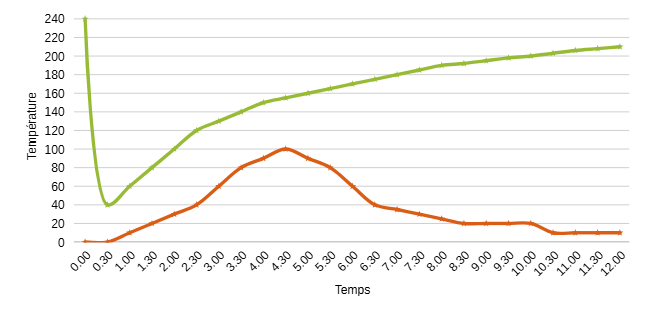
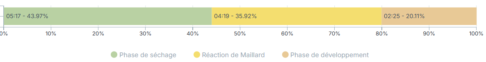
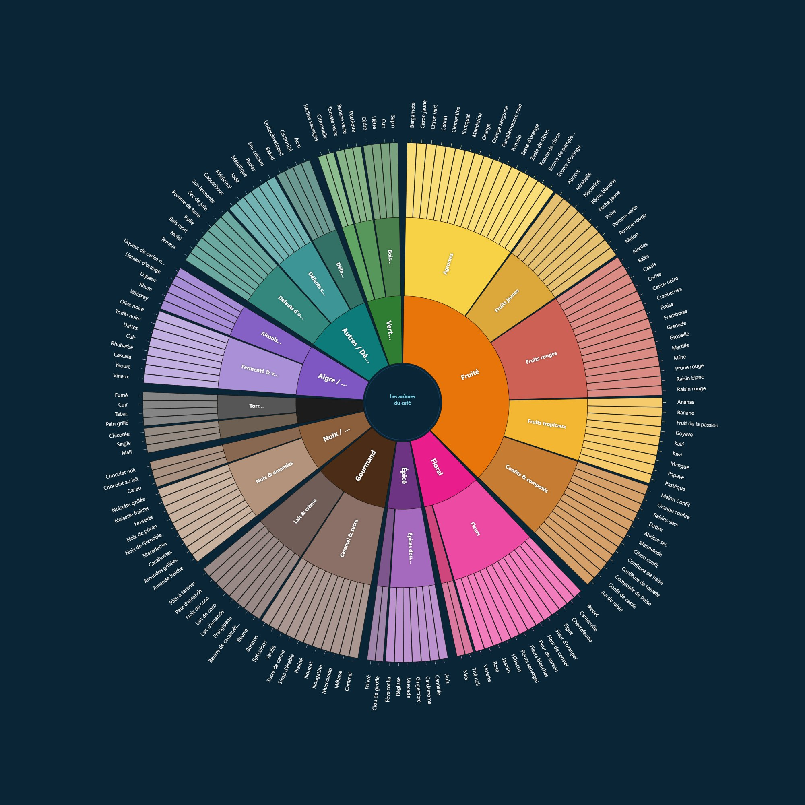

Le café décaféiné souffre d'une réputation tenace : celle d'un café « sans intérêt », amputé de sa raison d'être. Cette réputation est en grande partie héritée des procédés anciens, qui sacrifiaient les arômes pour retirer la caféine. Les méthodes contemporaines racontent une autre histoire. Décaféiner, ce n'est pas affaiblir un café : c'est réussir un tour de force chimique : retirer une seule molécule d'un grain qui en contient plusieurs centaines, sans emporter avec elle les précurseurs d'arômes qui feront la tasse.
Le principe naît en 1903 : le négociant allemand Ludwig Roselius met au point le premier procédé commercial de décaféination, breveté en 1906, qui donnera la marque Sanka. Son solvant d'origine, le benzène, a depuis été abandonné pour sa toxicité, mais la logique reste la même aujourd'hui : gonfler le grain vert, mobiliser la caféine, puis la capturer. Ce chapitre décrit les grandes familles de procédés utilisées dans la filière, leur chimie, leur cadre réglementaire, leur impact en tasse et ce qu'ils changent concrètement au moment de la torréfaction.
1. La caféine dans le grain
La caféine est un alcaloïde (la 1,3,7-triméthylxanthine) que le caféier synthétise notamment comme moyen de défense : c'est un insecticide naturel, amer, qui protège la plante. Sa teneur dépend d'abord de l'espèce :
•Arabica (Coffea arabica) : environ 1,2 à 1,5 % de la matière sèche du grain vert ;
•Robusta (Coffea canephora) : environ 2,2 à 2,7 %, soit près du double.
Dans le grain vert, la caféine n'est pas libre : elle est en grande partie liée aux acides chlorogéniques, sous forme de complexes (sels de chlorogénate). C'est pourquoi tous les procédés débutent par une étape d'humidification, vapeur ou trempage à l'eau chaude, qui gonfle le grain, ouvre ses pores et libère la caféine de ces liaisons pour la rendre mobile.
Deux propriétés physico-chimiques rendent l'opération possible. D'une part, la caféine est soluble dans l'eau, d'autant plus que celle-ci est chaude ; elle l'est aussi dans plusieurs solvants organiques. D'autre part, elle est thermostable : elle ne se dégrade pratiquement pas à la torréfaction. Autrement dit, on ne peut pas « brûler » la caféine en poussant le grillage ; il faut impérativement la retirer avant torréfaction, sur le café vert. Opérer sur le vert présente un autre avantage : cela évite de co-extraire les composés aromatiques qui, eux, ne se forment qu'à la torréfaction.
| LE POINT DE DÉPART COMMUN Quelle que soit la méthode — solvant, eau ou CO2 — la première étape est toujours la même : hydrater le grain vert pour rendre la caféine extractible. Ce qui distingue les procédés, c'est uniquement l'agent chargé de capturer la caféine une fois celle-ci mobilisée. |
|---|
2. Le cadre réglementaire
« Décaféiné » n'est pas un argument marketing libre : c'est une mention réglementée, avec des seuils précis, différents des deux côtés de l'Atlantique.
Ce que « décaféiné » veut dire
Dans l'Union européenne, un café torréfié vendu comme décaféiné doit contenir au maximum 0,1 % de caféine rapportée à la matière sèche ; pour le café soluble (instantané), le seuil est de 0,3 %. En pratique, cela impose de retirer de l'ordre de 97 à 99,9 % de la caféine initiale. Aux États-Unis, la FDA associe la mention decaffeinated à un retrait d'environ 97 % de la caféine.
Les résidus de solvants
Lorsqu'un solvant est employé, la réglementation encadre les résidus tolérés dans le produit fini. Dans l'UE, la directive 2009/32/CE fixe des limites maximales de résidus pour les solvants d'extraction. Aux États-Unis, le chlorure de méthylène est encadré par le 21 CFR 173.255. Les principales valeurs à retenir :
| Solvant | Zone | Limite de résidu (café torréfié) |
|---|---|---|
| Dichlorométhane (chlorure de méthylène) | UE | 2 mg/kg (2 ppm) |
| Chlorure de méthylène | USA (FDA) | 10 mg/kg (10 ppm) |
| Acétate de méthyle | UE | 20 mg/kg |
| Méthyléthylcétone (butanone) | UE | 20 mg/kg |
Ces plafonds sont des maxima. Dans les unités de décaféination respectant les bonnes pratiques de fabrication, les résidus réellement mesurés se situent le plus souvent entre 0,3 et 1 mg/kg, bien en deçà des seuils. Les procédés à l'eau et au CO2, eux, n'introduisent aucun solvant organique et ne sont donc pas concernés par ces limites.
3. Les procédés aux solvants
Historiquement les premiers, ils reposent sur un solvant organique qui se lie sélectivement à la caféine pour l'entraîner hors du grain. Deux variantes coexistent selon que le solvant touche ou non directement les grains.
Méthode directe
Les grains sont d'abord passés à la vapeur (environ 30 minutes) pour ouvrir leurs pores, puis rincés à plusieurs reprises par le solvant pendant une dizaine d'heures : celui-ci se charge de la caféine. Le solvant chargé est ensuite évacué, et les grains sont de nouveau étuvés à la vapeur pour éliminer le solvant résiduel avant séchage.
Méthode indirecte
Ici, le solvant ne touche jamais les grains. Ceux-ci sont trempés dans de l'eau chaude, qui extrait à la fois la caféine et une partie des composés solubles. Cette eau est ensuite séparée et traitée par le solvant, qui n'en retire que la caféine ; l'eau « réaromatisée », débarrassée de sa caféine mais riche de ses solubles, est enfin remise au contact des grains pour qu'ils réabsorbent leurs propres composés. C'est cette logique indirecte qui domine la « méthode européenne », très répandue notamment en Allemagne.
Les deux solvants employés
Le dichlorométhane (ou chlorure de méthylène) a longtemps été le solvant de référence : très efficace, sélectif de la caféine. Comme il n'est pas miscible à l'eau, il n'imprègne guère le cœur du grain gonflé, l'extraction se joue près de la surface, à l'interface entre la phase aqueuse et la phase organique. C'est le procédé auquel on a longtemps reproché une tasse « plate » ou « médicinale », à l'origine de la mauvaise réputation du décaféiné industriel.
L'acétate d'éthyle (EA) est l'autre solvant courant, utilisé depuis le début des années 1980. On le présente parfois comme un procédé « naturel ». L'acétate d'éthyle existe effectivement à l'état naturel dans certains fruits et dans la canne à sucre, d'où l'appellation sugarcane process popularisée par la Colombie. Il tend à mieux préserver certains arômes que le dichlorométhane.
| « NATUREL » : CE QUE DIT VRAIMENT L'ÉTIQUETTE La mention « décaféiné naturel » désigne presque toujours le procédé à l'acétate d'éthyle. Or l'acétate d'éthyle employé industriellement est synthétisé, et non extrait de fruits ou de canne. « Naturel » qualifie ici l'origine possible de la molécule, pas le mode de production du solvant réellement utilisé. |
|---|
4. Les procédés à l'eau
Ces méthodes se passent de tout solvant organique : elles n'utilisent que de l'eau, du temps, de la température et du charbon actif. Leur difficulté tient à un fait chimique gênant : l'eau n'est pas un solvant sélectif. Laissée à elle-même, elle emporterait aussi bien les sucres et les protéines que la caféine, c'est le fameux effet « délavé ».
Le procédé Swiss Water (SWP)
L'astuce consiste à jouer sur les gradients de concentration. Un premier lot de café vert est sacrifié pour produire un extrait aqueux : le Green Coffee Extract (GCE), saturé de tous les composés solubles du café, sauf la caféine, qui en est retirée. Les grains à décaféiner sont alors trempés 8 à 10 heures dans ce GCE. Comme l'extrait est déjà saturé en solubles mais vide de caféine, seule la caféine migre du grain vers le liquide, par différence de concentration, les arômes, eux, restent en équilibre et ne sont pas lessivés. Le GCE chargé est ensuite filtré sur charbon actif, qui piège la caféine ; l'extrait, régénéré, repart pour un nouveau cycle. Résultat : jusqu'à 99,9 % de caféine retirée, sans solvant, et une décaféination compatible avec une certification biologique.
Le procédé Mountain Water (MWP)
Variante mexicaine du même principe, développée dans l'État de Veracruz, elle utilise l'eau issue des glaciers du Pico de Orizaba. La logique est identique à celle du Swiss Water : extrait présaturé, migration sélective de la caféine, filtration sur charbon actif.
5. Le CO₂ supercritique
C'est le procédé le plus récent et le plus « propre » sur le plan chimique. Il exploite un état particulier du dioxyde de carbone : au-delà de son point critique, soit une température supérieure à environ 31,1 °C et une pression supérieure à environ 73 bar, le CO2 devient un fluide supercritique. Il possède alors une double nature : il diffuse à travers le grain comme un gaz, mais dissout les composés comme un liquide.
Sa sélectivité repose sur le principe « qui se ressemble s'assemble ». Le CO2 et la caféine sont deux petites molécules apolaires : le CO2 supercritique dissout donc préférentiellement la caféine, tandis que les composés d'arôme et de corps (glucides, peptides, grosses molécules polaires) sont largement épargnés. Concrètement, les grains humidifiés sont placés dans un extracteur sous pression ; le CO2 chargé de caféine est ensuite dépressurisé, ce qui fait précipiter la caféine et permet de récupérer le gaz, recyclé pour le lot suivant.
Ce procédé retire plus de 99 % de la caféine et offre la meilleure préservation aromatique parmi toutes les méthodes. Sa contrepartie est économique : les installations sous haute pression représentent un investissement lourd, qui se répercute sur le prix, le CO2 reste un procédé haut de gamme, souvent réservé au specialty.
6. Comparatif et lecture d'étiquette
Aucun procédé n'est parfait : chacun arbitre entre efficacité de retrait, préservation aromatique, coût et perception. Le tableau ci-dessous synthétise les ordres de grandeur.
| Procédé | Agent | Retrait | Impact aromatique / coût |
|---|---|---|---|
| Solvant — dichlorométhane | Chlorure de méthylène | ≈ 96–97 % | Perte aromatique la plus marquée ; peu coûteux |
| Solvant — acétate d'éthyle | Acétate d'éthyle (« naturel ») | ≈ 97 % | Plus doux ; coût modéré |
| Swiss Water / Mountain Water | Eau + charbon actif | ≈ 99,9 % | Bonne préservation ; sans solvant ; certifiable bio |
| CO₂ supercritique | CO₂ pressurisé | > 99 % | Meilleure préservation ; investissement lourd, premium |
Pour le professionnel comme pour le client, l'étiquette est le premier indice du procédé. Les mentions « sans solvant », « Swiss Water », « procédé à l'eau », « à l'eau de source » ou « CO2 » signalent une décaféination sans solvant organique. « Décaféiné à l'acétate d'éthyle », « sugarcane » ou « décaf naturel » renvoient au procédé EA. « Méthode européenne », enfin, désigne le plus souvent la voie au dichlorométhane.
7. Torréfier un café décaféiné
Le procédé de décaféination ne laisse pas le grain intact : il en modifie la structure, la densité et la teneur en eau. Un café vert décaféiné se reconnaît d'ailleurs souvent à l'œil, sa robe n'a plus le vert-bleu du café vert classique, mais des teintes plus brunes, plus ternes et parfois inégales, conséquence des traitements subis.
À la torréfaction, ces différences comptent. Le grain conduit la chaleur autrement, colore plus vite et paraît foncer plus rapidement ; le first crack est généralement plus discret, plus difficile à entendre, et la couleur de surface tend à surestimer le degré de développement réel. Se fier à la seule couleur expose donc à une sur-torréfaction, le grain « paraît » prêt avant de l'être vraiment.
| LE CONSEIL DU TORRÉFACTEUR Avec un décaféiné, ne pilotez pas au regard seul. Croisez les repères : le temps écoulé, le son du first crack et la température sonde priment sur la couleur, plus trompeuse que sur un café standard. Côté mesure de couleur, gardez en tête que la robe de départ atypique et la structure modifiée peuvent décaler les lectures colorimétriques : recalez vos repères Agtron/SCA sur un lot témoin de décaféiné plutôt que de transposer directement ceux d'un café classique. |
|---|
8. Le débat sanitaire actuel
La décaféination fait aujourd'hui l'objet d'un débat réglementaire vif, centré sur le chlorure de méthylène. Cette molécule est classée cancérogène par plusieurs autorités (CIRC, EPA américaine, National Toxicology Program). Aux États-Unis, l'EPA a interdit en mai 2024 la plupart de ses usages industriels et grand public, mais pas son usage alimentaire, qui relève de la compétence de la FDA et reste, à ce jour, autorisé.
En décembre 2023, une coalition d'associations (Environmental Defense Fund et autres) a déposé auprès de la FDA une pétition demandant le retrait de quatre solvants, dont le chlorure de méthylène, en s'appuyant sur la clause Delaney une disposition qui interdit tout additif alimentaire reconnu cancérogène. En Californie, un projet de loi (AB 2066, 2024) visait d'abord à interdire le procédé, avant d'être ramené à une obligation d'étiquetage. À la mi-2026, la FDA avait rouvert puis clôturé (fin juin 2026) une période de consultation publique sur ce dossier, sans décision définitive à ce stade.
Face à ces demandes, l'industrie (via la National Coffee Association) souligne que les résidus mesurés sont infimes, très inférieurs aux seuils réglementaires, et qu'aucune preuve n'établit un risque lié à la consommation de décaféiné « méthode européenne ». Du côté européen, le dichlorométhane demeure autorisé sous le plafond de 2 mg/kg. La tendance de fond, portée autant par la réglementation que par la demande, reste néanmoins un glissement progressif vers les procédés sans solvant.
Ce sujet touche à la santé et à la sécurité alimentaire ; les positions y sont contrastées et le cadre juridique évolue. Il est présenté ici de façon factuelle, en l'état des informations disponibles à la mi-2026, les décisions réglementaires en cours pouvant faire évoluer la situation.
| À RETENIR La caféine est thermostable : on la retire sur le café vert, avant torréfaction, jamais en poussant la torréfaction. Tous les procédés partagent une même première étape : hydrater le grain pour libérer la caféine de ses liaisons aux acides chlorogéniques. Solvants (dichlorométhane, acétate d'éthyle) : efficaces et peu coûteux, mais résidus encadrés (UE : 2 mg/kg pour le dichlorométhane) et débat sanitaire ouvert. Eau (Swiss Water, Mountain Water) et CO₂ supercritique : sans solvant, meilleure préservation aromatique, coût plus élevé. « Décaféiné » est une mention réglementée : ≤ 0,1 % de caféine (UE, café torréfié). « Naturel » = procédé à l'acétate d'éthyle, dont le solvant reste synthétisé. À la torréfaction, un décaféiné colore et fonce plus vite, avec un first crack discret : pilotez au temps, au son et à la sonde plutôt qu'à la couleur. |
|---|
Lecture du tableau :
•Les esters et terpènes sont volatils et fragiles → à protéger lors du développement final.
•Les pyrazines et furaneols se développent au cœur du Maillard → équilibre sucre / chaleur.
•Les phénols et soufrés apparaissent en fin de cuisson ou par contamination → potentiellement défavorables si excessifs.
| Famille chimique | Molécule | Arôme perçu | Formation / Origine | Process favorisant |
|---|---|---|---|---|
| Esters | Isoamyl-acétate | Banane, bonbon | Fermentation levurienne | Anaérobie, CM |
| Éthyl-butanoate | Ananas, mangue | Fermentation levurienne | Natural, Honey | |
| Éthyl-hexanoate | Pomme, fruit jaune | Fermentation levurienne | Co-fermentation, CM | |
| Éthyl-acétate | Vin doux, fruit fermenté | Fermentation acétique/alcoolique | Anaérobie, Overripe | |
| Éthyl-lactate | Douceur lactée, yaourt | Fermentation LAB | Lactic | |
| Isobutyl-acétate | Pomme verte, fruit croquant | Fermentation contrôlée | Anaérobie court | |
| Éthyl-décanoate | Fruit confit, floral | Fermentation longue | Naturals, CM | |
| Isoamyl-butanoate | Pêche, abricot | Co-fermentation fruitée | Fruit inoculation | |
| Aldéhydes | Phénylacétaldéhyde | Miel, floral | Maillard doux / levures | CM, Washed |
| Acétaldéhyde | Pomme verte, piquant | Fermentation alcoolique | Anaérobie | |
| Benzaldéhyde | Amande, cerise | Oxydation sucre aromatique | Torréfaction moyenne | |
| Hexanal | Herbacé, vert | Oxydation lipidique | Grain vert / Unripe | |
| Nonanal | Papier, foin | Vieillissement du vert | Past crop, Woody | |
| Acides volatils | Acide acétique | Vinaigre | Fermentation acétique | Sour, Swampy |
| Acide butyrique | Putride, aigre | Fermentation anaérobie trop longue | Overripe, Swampy | |
| Acide lactique | Douceur, velours | LAB | Lactic, Co-fermentation | |
| Acide isovalérique | Fromage, sueur | Bactéries / dégradation protéique | Sour, Defaut | |
| Acide propionique | Fermenté doux | LAB + levures | Lactic | |
| Cétones | Diacétyle | Beurre, crème | Fermentation lactique | Lactic |
| 2,3-Pentanedione | Crème légère, toffee | Maillard / LAB | Lactic, Honey | |
| Acétone | Solvant doux | Fermentation avancée | Defaut chemical | |
| Furaneols | Furaneol | Fraise, caramel | Maillard / sucre cuit | Natural, Torréfaction |
| 5-hydroxyméthylfurfural | Caramel, sucre brun | Dégradation sucres | Torréfaction | |
| 2-acétylfurane | Pain chaud | Maillard | Honey, Washed | |
| Pyrazines | 2-Méthylpyrazine | Noisette, grillé | Maillard | Torréfaction moyenne |
| 2,3-Diméthylpyrazine | Noisette, cacao | Maillard | Torréfaction | |
| 2,5-Diméthylpyrazine | Pain grillé | Maillard | Honey | |
| 2,3,5-Triméthylpyrazine | Cacahuète grillée | Maillard avancé | Torréfaction | |
| 2,3-Diethyl-5-methylpyrazine | Noix, cacao | Maillard | Medium roast | |
| Phénols | Guaiacol | Fumé, bois brûlé | Pyrolyse lignine | Torréfaction avancée |
| 4-Vinylguaiacol | Clou de girofle, épice | Dégradation acide férulique | CM, Natural | |
| 4-Ethylguaiacol | Épicé, fumé doux | Pyrolyse lignine | Torréfaction | |
| Vanilline | Vanille douce | Oxydation acide férulique | Torréfaction, Co-fermentation | |
| 2,4,6-Trichlorophénol | Médicinal, antiseptique | Contamination microbienne | Defaut Chemical/Rioy | |
| Terpènes | Linalol | Floral, lavande | Naturel du grain / levures | Washed, Yeast |
| Géraniol | Rose, citronnelle | Naturel du grain / fermentation douce | Lactic, Floral CM | |
| β-Myrcène | Résine, floral vert | Grain vert | Naturals | |
| Terpinéol | Lilas, citron | Oxydation terpènes | Lavé, Honey | |
| Citronellol | Agrume doux | Fermentation levurienne | Anaérobie | |
| Lactones | γ-Decalactone | Pêche, abricot | Dégradation lipidique | Natural, Honey |
| γ-Nonalactone | Noix de coco | Dégradation lipidique | Naturals, torréfaction lente | |
| δ-Octalactone | Beurre, caramel | Réaction lipidique | Lactic, Honey | |
| Soufrés | Méthanethiol | Œuf, gaz | Dégradation méthionine | Robusta, fermentation chaude |
| Diméthylsulfure (DMS) | Chou, caoutchouc | Dégradation cystéine | Robusta, Defaut Rubbery | |
| Thiophène | Pneu brûlé | Pyrolyse soufrée | Torréfaction avancée | |
| Sulfure d’hydrogène | Œuf pourri | Anaérobie chaude | Defaut Rubber/Sour | |
| Composés azotés | Pyrroles | Pain chaud, grillé | Maillard | Torréfaction moyenne |
| Indole | Floral, animal | Dégradation tryptophane | Fermentation prolongée | |
| Skatole | Animal, cuir | Décomposition organique | Defaut Swampy | |
| Autres (divers) | Géosmine | Terre humide | Bactéries du sol | Defaut Earthy |
| 2-MIB | Moisi, cave | Fongique | Defaut Moldy | |
| Benzothiazole | Brûlé, caoutchouc | Pyrolyse N/S | Torréfaction forte | |
| Maltol | Sucré, caramel doux | Maillard | Torréfaction douce | |
| Sotolon | Sirop d’érable, curry doux | Oxydation sucre | Honey, Natural | |
| Coumarine | Foin doux, vanille verte | Naturel / infusion florale | Co-fermentation florale | |
| Acétate de phényléthyle | Miel, rose | Levures / CM | CM, Anaérobie |
À retenir
Ces molécules ne sont pas des “arômes isolés” mais des familles structurantes : elles interagissent, s’équilibrent et se transforment à chaque étape du process et de la torréfaction. Connaître leur nature, c’est anticiper ce que le café peut devenir avant même qu’il ne passe en cuisson.
L'acrylamide est un composé néoformé qui apparaît au cours de la torréfaction. Dans le café, sa formation résulte principalement de la réaction entre l'asparagine libre, un acide aminé naturellement présent dans le grain vert, et les sucres réducteurs, notamment le glucose et le fructose. Cette réaction s'inscrit dans le cadre de la réaction de Maillard.
Selon l'EFSA et le Règlement (UE) 2017/2158, l'acrylamide se forme dans les aliments contenant de l'asparagine et des sucres réducteurs lorsqu'ils sont chauffés à des températures supérieures à 120 °C, dans des conditions de faible humidité. C'est donc à partir de ce seuil que la formation devient significative au cours de la torréfaction, puis s'intensifie pendant la phase de brunissement, à mesure que les réactions de Maillard deviennent plus actives.
Contrairement à une idée largement répandue, l'acrylamide n'augmente pas continuellement tout au long de la torréfaction. Son évolution suit une cinétique en cloche : sa concentration augmente rapidement, atteint un maximum, puis décroît progressivement à mesure que la torréfaction se poursuit.

Cette évolution peut être représentée de manière simplifiée comme suit :

En vert, la courbe de torréfaction classique et en orange, la courbe de développement des acrylamides.
Le maximum est généralement atteint relativement tôt au cours de la torréfaction, puis la concentration diminue à mesure que la cuisson se développe. Cette diminution s'explique par deux phénomènes complémentaires : d'une part la dégradation thermique de l'acrylamide sous l'effet de températures plus élevées, d'autre part l'épuisement progressif de l'asparagine, l'un de ses précurseurs clés, ainsi que son incorporation dans diverses réactions thermiques secondaires intervenant simultanément dans l'évolution chimique globale du café.
Il est important de comprendre que la quantité finale d'acrylamide résulte d'un équilibre permanent entre sa vitesse de formation et sa vitesse de dégradation. Un profil de torréfaction ne peut donc pas être évalué uniquement à partir de sa durée totale ou de sa couleur finale. La vitesse de montée en température, le temps passé dans les différentes plages thermiques ainsi que le développement après le premier crack influencent fortement cette cinétique. Deux cafés présentant une couleur de torréfaction similaire peuvent ainsi afficher des teneurs en acrylamide sensiblement différentes.
Cette cinétique explique un point souvent contre-intuitif, par ailleurs reconnu comme un point de contrôle dans le cadre du Règlement (UE) 2017/2158 : les grains torréfiés de couleur plus foncée présentent généralement une teneur en acrylamide plus faible que les grains plus clairs. Une torréfaction plus poussée ne conduit donc pas à une teneur plus élevée ; au contraire, les profils les plus clairs à intermédiaires présentent fréquemment les concentrations les plus importantes.
Il convient néanmoins de rappeler que la concentration finale dépend de nombreux paramètres propres au café vert, parmi lesquels :
la concentration initiale en asparagine libre ;
la disponibilité des sucres réducteurs ;
la variété botanique ;
l'origine géographique et le terroir ;
les conditions culturales, notamment la fertilisation azotée ;
le degré de maturité des cerises lors de la récolte ;
le procédé post-récolte ;
les conditions de stockage du café vert ;
le profil thermique appliqué ;
la durée effective des différentes phases de torréfaction.
À titre indicatif, le café Robusta tend à présenter des teneurs en acrylamide légèrement supérieures à celles de l'Arabica, en raison notamment d'une teneur plus élevée en précurseurs.
Les procédés fermentaires innovants ou certaines fermentations prolongées peuvent également modifier la concentration de plusieurs précurseurs impliqués dans la formation de l'acrylamide, notamment les acides aminés libres et les sucres réducteurs. Toutefois, leurs effets sur la concentration finale en acrylamide demeurent encore insuffisamment documentés et font toujours l'objet de recherches.
En pratique, la maîtrise des acrylamides ne consiste pas à rechercher systématiquement les torréfactions les plus développées. Une cuisson excessivement poussée réduit effectivement la concentration en acrylamide, mais elle entraîne également une dégradation importante des composés aromatiques les plus volatils, une augmentation des notes de pyrolyse, de l'amertume et de l'astringence, ainsi qu'une diminution de la complexité sensorielle.
Le Règlement (UE) 2017/2158 fixe d'ailleurs une logique de compromis explicite : les exploitants doivent déterminer les conditions critiques de torréfaction afin de garantir une formation minimale d'acrylamide tout en respectant le profil aromatique cible. L'objectif du torréfacteur consiste donc à trouver un équilibre entre plusieurs exigences parfois contradictoires : développer suffisamment le café afin de favoriser la diminution des acrylamides tout en préservant la richesse aromatique, l'identité variétale et l'expression du terroir.
Ainsi, la maîtrise du profil de torréfaction ne conditionne pas uniquement la qualité sensorielle de la tasse. Elle constitue également un levier important dans la gestion des composés néoformés, parmi lesquels l'acrylamide, tout en rappelant que la qualité d'une torréfaction résulte toujours d'un compromis entre sécurité sanitaire, performances technologiques et expression organoleptique.
Cadre réglementaire
Le Règlement (UE) 2017/2158 de la Commission, du 20 novembre 2017, établit des mesures d'atténuation et des teneurs de référence pour la réduction de la présence d'acrylamide dans les denrées alimentaires. Pour le café torréfié, la teneur de référence est fixée à 400 µg/kg ; pour le café instantané (soluble), elle est de 850 µg/kg. Ces teneurs de référence ne constituent pas des limites maximales légales mais des indicateurs de performance permettant de vérifier l'efficacité des mesures d'atténuation mises en place par l'exploitant. Le règlement est applicable depuis le 11 avril 2018. AniaPhytocontrol
À retenir
L'acrylamide se forme à partir de l'asparagine libre et des sucres réducteurs, à des températures supérieures à 120 °C et en conditions de faible humidité, dans le cadre de la réaction de Maillard.
Sa concentration suit une cinétique en cloche : elle augmente, atteint un maximum relativement tôt, puis diminue à mesure que la torréfaction se développe.
Cette diminution s'explique par la dégradation thermique de l'acrylamide et par l'épuisement progressif de l'asparagine.
Les torréfactions claires présentent généralement davantage d'acrylamide que les torréfactions plus foncées.
Une torréfaction plus foncée n'est cependant pas une solution systématique, car elle s'accompagne d'une perte de qualité aromatique.
La teneur de référence réglementaire (UE 2017/2158) est de 400 µg/kg pour le café torréfié.
L'objectif du torréfacteur est de trouver le meilleur compromis entre sécurité sanitaire, développement aromatique et expression du café.
L’eau représente 98 à 99 % d’un café filtre. Son choix n’est pas anodin : elle est le solvant qui détermine ce qui sort du grain, en quelle proportion, et avec quelle sélectivité. Cette annexe présente les bases de la chimie de l’eau appliquée à l’extraction.
1. La minéralisation
Comme le café a son terroir, l’eau a le sien. Sa composition minérale dépend des aquifères qu’elle traverse. Les minéraux sont divisés en deux grandes familles :
Cations (leur nom se termine généralement en « ium ») : calcium (Ca²⁺), magnésium (Mg²⁺), potassium (K⁺), sodium (Na⁺).
Anions : bicarbonates (HCO₃⁻), sulfates (SO₄²⁻), nitrates (NO₃⁻), chlorures (Cl⁻).
Des oligo-éléments sont également présents en très faibles quantités : fer, zinc, silice, fluor, cuivre, etc. Ils n’ont pas d’impact significatif sur l’extraction mais contribuent à l’empreinte géologique de l’eau.
2. Impact des minéraux sur la tasse
| Minéral | Rôle en extraction | Effet sensoriel en excès |
|---|---|---|
| Magnésium (Mg²⁺) | Favorise l’extraction des acides aromatiques et composés de saveur | Métallique, amertume renforcée, notes chocolatées lourdes |
| Calcium (Ca²⁺) | Extraction des notes fruitées, acides, délicates | Dépôt de calcaire dans la machine (entartrage) |
| Bicarbonates (HCO₃⁻) | Tampon alcalin : neutralise les acides du café | Aplatit l’acidité, rend la tasse plate et douce en excès |
| Sodium (Na⁺) | Inhibe partiellement l’extraction des aromatiques | Goût salé, peut « casser » un profil vineux |
| Sulfates (SO₄²⁻) | Renforce la perception de sécheresse | Astringence, sécheresse en bouche |
| Calcium vs Magnésium : la distinction clé Le calcium fait ressortir les notes fruitées, acides et délicates. Le magnésium amplifie les notes de torréfaction, le chocolaté et le corps — mais augmente également l’amertume. Un café light roast éthiopien fruité bénéficiera d’une eau riche en calcium. Un medium roast chocolaté du Costa Rica gagnera à avoir plus de magnésium. La clé est l’équilibre entre les deux. |
|---|
3. Le pH et son impact
Le pH mesure l’activité de l’ion hydrogène dans une solution sur une échelle de 0 à 14. À 7 : neutre. En dessous : acide. Au-dessus : alcalin (basique). En pratique, le pH de l’eau d’extraction est défini par le ratio cations (Ca²⁺ + Mg²⁺) / bicarbonates.
| pH de l’eau | Effet sur la tasse | Cafés adaptés |
|---|---|---|
| Acide (< 7) | Accentue la perception acide et fruitée. Réduit l’amertume perçue. | Cafés à typicité « gourmande », notes chocolatées, medium–dark |
| Neutre (6,5–7,5) | Résultat équilibré, référence SCA. Respecte le profil du grain. | Cafés de spécialité, toutes torréfactions |
| Alcalin (> 7,5) | Atténue l’acidité, renforce la douceur et le sucré. | Cafés vifs et acidulés, light roasts, lavés éthiopiens |
4. Normes SCA et paramètres recommandés
| Paramètre | Valeur cible SCA | Impact si hors zone |
|---|---|---|
| TDS (minéralité totale) | 75–250 ppm | < 75 ppm : extraction plate ; > 250 ppm : biais métallique |
| Dureté totale (Ca + Mg) | 40–175 ppm | > 175 ppm : entartrage et biais d’extraction |
| Alcalinité (HCO₃⁻) | 40–70 ppm | > 100 ppm : neutralise l’acidité du café |
| pH | 6,5–7,5 | < 6 : accentue acide ; > 8 : tasse plate |
| Sodium | < 30 mg/L | > 30 mg/L : goût salé, inhibition aromatique |
5. Fabriquer son eau (pour aller plus loin)
Pour un contrôle total, certains baristas et torréfacteurs « fabriquent » leur eau : eau pure (0 ppm, osmose inverse ou distillée) à laquelle ils ajoutent leurs propres minéraux. L’objectif est de donner à l’eau un pouvoir solvant maximal tout en maîtrisant précisément le ratio GH/KH.
| Ratio GH/KH : la règle de base GH (General Hardness) = dureté totale, principalement Ca²⁺ + Mg²⁺. KH (Carbonate Hardness) = alcalinité, principalement HCO₃⁻. Ratio recommandé : GH/KH = 2 (deux fois plus de calcium + magnésium que de bicarbonates). Exemple de recette simplifiée pour 1 L d’eau pure : 50 mg Ca²⁺ + 50 mg Mg²⁺ + 50 mg HCO₃⁻. Une eau maison n’abimera pas la machine car les ratios sont maîtrisés, contrairement à une eau dure non contrôlée. |
|---|
6. Tableau comparatif des eaux du commerce
| Eau | Bicarbonates | Calcium | Magnésium | Sodium | pH | Résidu à sec |
|---|---|---|---|---|---|---|
| Cristaline | 260 mg | 74 mg | 19 mg | 21 mg | 7,7 | 347 mg/L |
| Contrex | 372 mg | 468 mg | 74,5 mg | 9,4 mg | 7,4 | 2078 mg/L |
| Courmayeur | 180 mg | 557 mg | 68 mg | 0,6 mg | 7,7 | 2146 mg/L |
| Evian | 360 mg | 80 mg | 26 mg | 6,5 mg | 7,2 | — |
| Thonon | 340 mg | 92 mg | 16 mg | 6 mg | 7,4 | 342 mg/L |
| Wattwiller | 135 mg | 3 mg | 11 mg | 3 mg | 7,5 | 155 mg/L |
| Vittel | 384 mg | 240 mg | 42 mg | 5,2 mg | 7,6 | 1084 mg/L |
| Hépar | 383,7 mg | 549 mg | 119 mg | 14,2 mg | 7,2 | 2513 mg/L |
| Volvic | 74 mg | 12 mg | 8 mg | 12 mg | 7 | 130 L |
Ces protocoles décrivent la culture du champignon Aspergillus Oryzae (souche MSCO-11, Higuchi-Moyashi, Japon) et son application à la fermentation de cerises de café. L’objectif : décomposer les polysaccharides et la pectine, produire des acides aminés (umami), et développer un profil aromatique plus complexe qu’une fermentation classique.
1. Culture d’Aspergillus Oryzae
Aspergillus Oryzae (Koji) se développe de façon optimale à pH neutre (7) et à 26–32°C avec une teneur en humidité de 35–40 %. Trois méthodes de culture sont envisageables :
| Méthode | Substrat | Ratio spores | Durée | Avantages |
|---|---|---|---|---|
| Culture sur riz | Riz cuit à la vapeur | 1 g spores / 500 g riz | ~72h | Méthode classique, bien documentée |
| Culture sur banane plantain | Banane plantain non mûre (80 % amidon, pH 6,5) | 1 g spores / 1000 g bananes | ~48h | Substrat « propre », protections naturelles, double rôle substrat + fermentation |
| Inoculation directe | Cerises de café mûres | 1 g spores / 1000 g cerises | — | Simple mais coûteux (plus de spores nécessaires) |
| Caractéristiques du Koji MSCO-11 Forts effets saccharifiants (dégradation des sucres complexes en sucres simples). Production élevée d’acides aminés (umami). Résultat sensoriel attendu : fragmentation des sucres complexes, développement de l’umami, acidité et corps augmentés par rapport à une fermentation classique. Attention : ce processus est plus exigeant en termes de contrôle de température et de timing que les fermentations standard. |
|---|
2. Protocole ASP1.1 — Fermentation séquentielle (36h)
Principe : Inoculer Koji sur bananes plantain non mûres pendant 8–12h, puis transférer sur un lit de cerises de café mûres pendant 12–24h.
Ratio : 1 kg bananes plantain pour 2 kg cerises de café. Spores : 1 g pour 20 g farine de riz pour 1 kg de bananes.
Phase 1 — Fermentation des bananes (8–12h)
•Placer les bananes épluchées dans un bac plastique propre.
•Saupoudrer 1 g de spores mélangé à 20 g de farine de riz par kg de bananes. Mélanger avec des gants.
•Filmer le récipient (film alimentaire percé). Placer dans un endroit peu ventilé, à l’abri.
•Contrôler la température toutes les 6h (maintenir entre 26 et 30°C). Déplacer si nécessaire.
•Remuer doucement toutes les 6h. Enregistrer date, heure, T° ambiante, T° à cœur, odeur.
•À 12h : le Koji doit former un duvet blanc sur les bananes avec des arômes de fruits tropicaux.
Phase 2 — Ajout des cerises (12–24h)
•Ajouter le double de cerises mûres triées par flottaison (2 kg cerises pour 1 kg bananes).
•Mélanger doucement. Filmer et percer. Maintenir 26–30°C.
•Contrôler et remuer toutes les 6h. Enregistrer tous les paramètres.
•À 18h après le début de la phase 2 : duvet blanc sur tout le mix, odeur fruits tropicaux = fermentation terminée.
•Envoyer au séchage sur lits africains sous ombrage. Durée : 20–30 jours. Viser 10–12 % d’humidité finale.
3. Protocole ASP1.2 — Fermentation simultanée (24h)
Principe : Mélange direct cerises mûres + bananes plantain non mûres inoculé en une seule étape.
Ratio : 60 % cerises de café mûres + 40 % bananes plantain non mûres. Spores : 1 g pour 20 g farine de riz pour 1 kg du mélange.
•Trier les cerises par flottaison. Utiliser des bananes plantain vertes (amidon 80 %).
•Mélanger cerises + plantain dans un bac propre. Saupoudrer les spores + farine. Mélanger avec des gants.
•Couche peu profonde pour maximiser l’exposition à l’oxygène. Filmer et percer. Maintenir 26–30°C.
•Contrôler toutes les 6h, remuer toutes les 8–12h. T° Critère d’alerte température : si le tas se réchauffe, déplacer immédiatement.
•À 24h : duvet blanc sur tout le mix, arôme fruits tropicaux = fermentation terminée.
•Séchage sous mi-ombre (ombrage 60–80 %, 25–30°C). 20–30 jours.
4. Protocole ASP2.2 — Double fermentation (24h + 48h)
Le protocole ASP2.2 est une double fermentation : une première phase suivant le protocole ASP1.2, suivie d’une deuxième phase de macro-oxygénation avant séchage.
Phase 1 : Suivre intégralement le protocole ASP1.2 (24h). À l’issue des 24h, stopper la fermentation par choc thermique (refroidissement rapide du mix).
Phase 2 — Macro-oxygénation (48h) : Protocole en cours de développement.
| Résultat attendu La double fermentation ASP2.2 vise une fragmentation plus poussée des sucres complexes et un développement de l’umami supérieur à ASP1.2. Elle produit une tasse avec plus d’acidité, de corps et de complexité aromatique qu’une fermentation classique. |
|---|
5. Stockage des cerises séchées
| Paramètre | Recommandation |
|---|---|
| Contenants | Sacs GrainPro ou Ecotact propres et fermés, ou récipients de fermentation désinfectés |
| Température | < 20°C |
| Humidité relative | 50–60 % |
| Traitement du grain vert | Ne pas polir. Conserver le maximum de pellicule argentée. |
| Classement | Séparer par taille si possible. Grade vert zéro défaut. |
| Conditionnement | Sceller sous vide immédiatement après le déparchage. |
6. Équipements nécessaires
•Thermomètre à sonde (T° à cœur)
•Thermomètre infrarouge (T° de surface et temps de séchage)
•Thermomètre ambiant numérique avec hygrométrie
•Balance haute précision (0,1 g)
•Balance (0–20 kg)
•Bacs plastique ou inox nettoyables, avec couvercles
•Film alimentaire grade alimentaire
•Spores Aspergillus Oryzae MSCO-11 (Higuchi-Moyashi, Japon)
•Farine de riz (vecteur pour la distribution des spores)
Création originale. Cette roue organise le spectre aromatique du café en familles, sous-familles et notes spécifiques, cohérentes avec les profils décrits dans les chapitres précédents. Elle sert de référence visuelle pour l’analyse sensorielle et le vocabulaire de dégustation.

Le café de spécialité existe-t-il encore ?
Quand le 80/100 ne suffit plus à définir une catégorie
Pendant près de vingt ans, le café de spécialité avait quelque chose de confortable : une frontière.
Elle n’était pas parfaite, elle était parfois caricaturée, mais elle était comprise par une grande partie de la profession. Un café vert était contrôlé, trié, préparé selon un protocole défini, puis dégusté sur plusieurs bols. Son profil sensoriel était évalué à l’aide du formulaire SCAA puis SCA sur 100 points. Dans le système Q du Coffee Quality Institute, un Arabica obtenant au moins 80 points, associé aux exigences de classement physique requises, pouvait être qualifié de specialty dans le cadre du Q System.
Avec le temps, cette mécanique complexe s’est résumée dans l’imaginaire collectif à une équation très simple :
80 points ou plus = café de spécialité.
Cette phrase n’a jamais raconté toute l’histoire. Le Q System ne reposait pas uniquement sur la tasse : le café devait notamment satisfaire des critères physiques et ne pas présenter de défaut primaire pour obtenir son certificat. Mais le score avait un immense avantage : tout le monde comprenait la frontière.
Aujourd’hui, cette frontière a disparu du référentiel officiel de la Specialty Coffee Association.
Et ce changement est beaucoup plus profond qu’un simple remplacement de formulaire.
Sources : Coffee Quality Institute, « Process for Evaluating Coffees in the Q Coffee System », version 2024 ; Specialty Coffee Association, « Valuing Coffee: Evolving the SCA’s Cupping Protocol into a Coffee Value Assessment System ».
Le fameux 80 : une convention devenue définition
Le formulaire historique de cupping prend forme à la fin des années 1990 et est stabilisé autour de 2004. La SCA explique elle-même qu’il a été influencé par les systèmes de notation sur 100 utilisés dans le vin. Son ambition était alors très concrète : permettre de distinguer les cafés de « specialty grade » des cafés commerciaux et créer un langage commun entre producteurs, exportateurs, acheteurs et torréfacteurs.
Le système fonctionnait remarquablement bien pour cela.
Un café pouvait être décrit par sa fragrance, son arôme, sa flaveur, son arrière-goût, son acidité, son corps, son équilibre, son uniformité, sa propreté, sa douceur et son impression générale. Les défauts pouvaient diminuer le résultat.
Les cinq bols avaient également une fonction essentielle : vérifier que ce que l’on goûtait était représentatif du lot. Un café magnifique dans quatre bols mais présentant un défaut dans le cinquième n’était pas considéré de la même manière qu’un café parfaitement homogène.
Puis le chiffre a progressivement pris le dessus sur le reste.
Un langage parallèle s’est installé dans l’industrie. Le score ne servait plus seulement à résumer une évaluation. Il devenait parfois la qualité elle-même.
La SCA rapporte d’ailleurs qu’une enquête menée lors de ses travaux préparatoires au CVA montrait à quel point les scores étaient intégrés aux transactions commerciales. Ils étaient devenus une véritable monnaie linguistique du commerce du café.
C’est précisément cette domination du score unique que la SCA a décidé de remettre en question.
Source : Specialty Coffee Association, « Valuing Coffee: Evolving the SCA’s Cupping Protocol into a Coffee Value Assessment System ».
2021 : la SCA change d’abord la définition, avant de changer le formulaire
Le véritable basculement commence en 2021.
Dans son livre blanc Towards a Definition of Specialty Coffee: Building an Understanding Based on Attributes, la SCA reconnaît un problème fondamental : après des décennies d’utilisation du terme « specialty coffee », l’industrie ne dispose toujours pas d’une définition parfaitement satisfaisante de ce qu’il recouvre.
Elle propose alors une nouvelle définition :
« Specialty coffee is a coffee or coffee experience recognized for its distinctive attributes, and because of these attributes, it has significant extra value in the marketplace. »
Autrement dit :
un café de spécialité est un café, ou une expérience liée au café, reconnu pour des attributs distinctifs qui lui confèrent une valeur supplémentaire significative sur le marché.
Le changement de philosophie est majeur.
Il n’est plus question d’un seuil.
Il n’est même plus seulement question de qualité sensorielle.
La SCA distingue désormais des attributs intrinsèques, comme la flaveur, l’arôme ou la texture, et des attributs extrinsèques, c’est-à-dire les informations associées au produit : origine, producteur, pratiques agricoles, méthode de transformation, traçabilité, certifications, etc.
Un café n’est donc plus « spécial » uniquement parce que sa tasse franchit une frontière sensorielle. Il est spécial parce qu’il possède quelque chose de distinctif auquel un marché reconnaît une valeur supplémentaire.
Sources : Specialty Coffee Association, « Towards a Definition of Specialty Coffee: Building an Understanding Based on Attributes », 2021 ; Specialty Coffee Association, « What is Specialty Coffee? ».
Puis arrive le CVA
Le Coffee Value Assessment est la traduction pratique de cette nouvelle philosophie.
En novembre 2024, la SCA adopte officiellement trois nouveaux standards de cupping : SCA-102 pour la préparation et la mécanique de dégustation, SCA-103 pour l’évaluation descriptive et SCA-104 pour l’évaluation affective. Ils remplacent officiellement le protocole et le formulaire SCA de 2004.
Aujourd’hui, le CVA repose sur quatre dimensions complémentaires :
L’évaluation physique regarde le café en tant que matière première : défauts, couleur, humidité, taille, etc.
L’évaluation descriptive cherche à répondre à une question relativement objective : qu’est-ce que je perçois ? Quels arômes ? Quelle intensité d’acidité ? Quelle texture ? Quel profil ?
L’évaluation affective pose une autre question : quelle valeur qualitative est-ce que j’accorde à ce que je perçois ? Elle assume donc explicitement l’existence de préférences personnelles ou de préférences propres à un marché.
L’évaluation extrinsèque documente ce qui n’est pas directement perceptible dans la tasse : origine, traçabilité, transformation, certifications et autres informations susceptibles de participer à la valeur.
Ces quatre dimensions ne sont pas additionnées pour fabriquer un gigantesque « score CVA » censé décider si le café est spécial ou non.
La SCA le dit explicitement : le CVA cherche à fournir une image à haute résolution de la valeur d’un café plutôt qu’à dépendre d’un score unique.
Sources : Specialty Coffee Association, « Coffee Value Assessment » ; Specialty Coffee Association, « SCA Standards » ; Specialty Coffee Association, annonce du 4 novembre 2024 sur l’adoption des nouveaux standards.
Le score sur 100 n’a pourtant pas disparu
C’est une nuance importante.
Le CVA possède toujours un Total Affective Score, calculé à partir de l’évaluation affective. La SCA fournit même un calculateur officiel permettant d’obtenir ce résultat sur une échelle de 0 à 100.
Mais ce chiffre n’a plus la même signification.
Il ne représente pas « la valeur totale du café ».
Il ne combine pas physique, descriptif, affectif et extrinsèque.
Il représente l’appréciation affective du café dans un contexte donné.
La distinction peut sembler philosophique jusqu’à ce que l’on considère un exemple donné par la SCA : deux dégustateurs compétents peuvent théoriquement attribuer au même café des scores affectifs extrêmement éloignés s’ils évaluent sa pertinence pour des marchés différents. La SCA cite même le cas potentiel d’un café pouvant recevoir 73 dans un contexte et 97 dans un autre.
Ce serait une aberration dans l’ancienne vision d’une qualité supposée universelle.
Dans le CVA, c’est précisément le point.
La SCA veut séparer ce que le café est de la valeur que quelqu’un lui accorde.
Sources : Specialty Coffee Association, « CVA Affective Score Calculator » ; Specialty Coffee Association, « The Coffee Value Assessment in Action: The Affective Assessment ».
Et c’est ici que le nouveau système devient à la fois beaucoup plus intelligent… et beaucoup plus inconfortable
Sur le plan de l’analyse sensorielle, difficile de reprocher au CVA de séparer description et préférence.
Dire :
« ce café possède une acidité élevée »
et :
« cette acidité est excellente »
sont effectivement deux affirmations différentes.
La première décrit un stimulus.
La seconde exprime un jugement.
L’ancien formulaire mélangeait en partie ces deux opérations. La SCA explique que cette séparation correspond davantage aux bonnes pratiques de la science sensorielle moderne.
Le CVA permet également de sortir d’une vision étonnamment étroite du café de spécialité. Un Canephora, un café présentant un profil fermentaire très polarisant ou un café destiné à un marché recherchant des caractéristiques très particulières n’a plus besoin d’être jugé en essayant de reproduire implicitement les préférences d’un dégustateur occidental calibré sur une certaine idée historique de l’Arabica « propre, doux, complexe et acide ».
Sur ce point, le changement est puissant.
Mais il a un prix.
Nous avons gagné en description de la valeur ce que nous avons perdu en définition de la catégorie.
Alors, à partir de quand un café est-il specialty ?
C’est la question gênante.
Avec l’ancien raccourci, la réponse était presque mécanique :
80 ou plus.
Aujourd’hui, la réponse officielle ressemble davantage à :
lorsqu’il possède des attributs distinctifs auxquels un marché reconnaît une valeur supplémentaire significative.
Très bien.
Mais combien d’attributs ?
Quelle valeur supplémentaire ?
Par rapport à quoi ?
Reconnaissable par combien d’acheteurs ?
Sur quel marché ?
Pendant combien de temps ?
Et surtout : où commence le specialty et où s’arrête le café commercial ?
La SCA ne fournit pas aujourd’hui de seuil universel répondant à ces questions.
Ce n’est pas un oubli. C’est une conséquence logique de la définition adoptée : la valeur est considérée comme contextuelle.
Source : Specialty Coffee Association, « What is Specialty Coffee? ».
Et c’est là que le mot « marché » devient particulièrement intéressant
On parle quotidiennement du marché du café de spécialité.
On mesure sa croissance.
On mesure ses consommateurs.
On compare le specialty au café traditionnel.
Mais pour mesurer un marché, il faut nécessairement décider ce qui entre dans la boîte.
Et lorsque l’on regarde comment cette boîte est construite, quelque chose d’assez fascinant apparaît : il n’existe pas une définition opérationnelle unique du marché specialty.
Prenons le National Coffee Data Trends Specialty Coffee Breakout Report 2025, publié par la National Coffee Association en collaboration avec la SCA.
Dans cette étude, est considéré comme specialty :
tout espresso et toute boisson à base d’espresso comme un latte ou un cappuccino, certaines boissons comme le cold brew ou le nitro, ainsi que le café traditionnel lorsque le consommateur estime qu’il a été préparé avec des grains ou du café moulu « premium ».
Pas de seuil à 80.
Pas de classement du café vert.
Pas de CVA obligatoire.
Pas de Q Grader.
La définition sert ici à mesurer un comportement de consommation.
Source : Specialty Coffee Association / National Coffee Association, « 2025 National Coffee Data Trends Specialty Coffee Breakout Report », 2025.
Quelques mois plus tard, la revue de la SCA publie en 2026 une étude portant sur les chaînes de valeur du specialty en Colombie et en Bolivie.
Cette fois, les chercheurs doivent eux aussi décider ce qu’ils appellent « specialty coffee ».
Ils retiennent les cafés au-dessus de 80 points en Colombie…
mais au-dessus de 83 en Bolivie.
Pourquoi 83 ?
Parce que, dans le contexte bolivien étudié, c’est autour de ce niveau que les chercheurs observent généralement l’apparition d’une prime de prix.
Voilà probablement l’exemple le plus parlant de toute cette évolution.
Le même terme peut être défini :
par une perception de « premium » dans une étude de consommation,
par 80 points dans un marché,
et par 83 dans un autre.
Source : Specialty Coffee Association, « Making Markets Work: A Participatory Study of Specialty Coffee and Domestic Value Chains for Farmers », avril 2026.
Ce n’est donc plus vraiment un grade
C’est peut-être la distinction la plus importante.
Nous avons longtemps traité « specialty » comme s’il s’agissait essentiellement d’un grade de qualité.
La conception actuelle de la SCA est différente.
Le specialty devient davantage une catégorie de différenciation et de valeur.
Ce qui conduit à un basculement assez spectaculaire.
L’ancienne logique pouvait être résumée ainsi :
qualité du café → mesure → score → catégorie
La nouvelle ressemble plutôt à :
attributs → perception → adéquation avec un marché → valeur → specialty
Ce changement ouvre énormément de possibilités.
Il reconnaît la diversité des goûts.
Il permet de mieux valoriser l’origine et le travail du producteur.
Il reconnaît que deux cafés identiques sensoriellement peuvent posséder des propositions de valeur différentes.
Il évite de prétendre qu’un nombre sur 100 contient à lui seul toute la vérité sur un produit agricole extrêmement complexe.
Mais il crée également une fragilité logique.
Parce que si le specialty est défini par la valeur supplémentaire qu’un marché attribue à certains cafés, alors le marché participe lui-même à la définition de ce qui appartient au marché specialty.
Ce n’est pas totalement circulaire, puisque l’existence d’attributs distinctifs reste nécessaire.
Mais la frontière devient mouvante.
Le problème n’est pas le CVA
Ce serait probablement une erreur de tirer sur le mauvais coupable.
Le CVA répond à une question légitime :
comment décrire correctement les différentes raisons pour lesquelles un café peut avoir de la valeur ?
Et il y répond mieux que l’ancien formulaire dans de nombreux domaines.
Le problème apparaît lorsque l’on pose au CVA une autre question :
qu’est-ce qu’un café de spécialité ?
Le CVA n’est pas une machine à fabriquer une réponse binaire.
Il est un système d’évaluation.
La SCA elle-même précise que les quatre évaluations peuvent être réalisées ensemble ou indépendamment selon le besoin. Il n’existe pas de formule officielle du type :
40 % sensoriel
20 % physique
20 % extrinsèque
20 % préférence marché
qui produirait ensuite un verdict « specialty / non-specialty ».
Source : Specialty Coffee Association, « Coffee Value Assessment ».
Et le Q Grader dans tout ça ?
Autre changement important : le CQI n’a pas été « racheté » par la SCA.
En avril 2025, les deux organisations ont annoncé un partenariat prévoyant notamment le transfert de la gestion du programme Q Grader.
Depuis le 1er octobre 2025, le programme Q Grader est exploité par la SCA et repose sur le CVA. Le nouveau cursus évalue les compétences des professionnels dans les dimensions physique, descriptive, affective et extrinsèque.
Le CQI continue quant à lui d’exister comme organisation indépendante et poursuit notamment ses activités liées au développement et à l’éducation dans les pays producteurs.
Le symbole est néanmoins fort.
Pendant deux décennies, le Q Grader a probablement été l’une des incarnations les plus visibles de la culture du « 80+ ».
Aujourd’hui, le programme phare de qualification des évaluateurs est construit autour d’un système qui considère justement qu’un score unique est insuffisant.
Sources : Specialty Coffee Association et Coffee Quality Institute, annonce du partenariat d’avril 2025 ; Specialty Coffee Association, « Q Grader Courses Now Available Across Various Regions and Languages », 1er octobre 2025 ; Coffee Quality Institute, accord de subvention SCA-CQI, 26 avril 2025.
Alors le seuil des 80 points est-il mort ?
Non.
Mais son statut a changé.
Le 80 reste profondément implanté dans le commerce international du café. Des contrats, des fournisseurs, des acheteurs, des concours et des entreprises continuent à utiliser des scores comme spécifications commerciales.
Et rien n’empêche une entreprise de définir sa propre gamme de specialty avec un minimum de 80, 82, 84 ou 86.
L’étude publiée par la SCA en 2026 sur la Colombie et la Bolivie montre d’ailleurs parfaitement que le système historique reste utilisable comme définition opérationnelle de recherche lorsque l’on précise explicitement le seuil retenu.
En revanche, on ne peut plus dire rigoureusement :
« Selon la définition actuelle de la SCA, tout café à 80 points ou plus est automatiquement un café de spécialité. »
Ce n’est plus la définition officielle.
Et l’inverse est tout aussi important :
un café n’a pas besoin aujourd’hui de franchir officiellement la frontière des 80 pour satisfaire la définition conceptuelle actuelle de la SCA.
La SCA a remplacé une frontière numérique par une définition fondée sur les attributs et la création de valeur.
Sources : Specialty Coffee Association, « What is Specialty Coffee? » ; Specialty Coffee Association, « Coffee Value Assessment » ; Specialty Coffee Association, « Making Markets Work », 2026.
Une définition plus juste, mais moins utilisable ?
Voilà finalement le paradoxe.
La nouvelle conception est probablement plus honnête intellectuellement.
Un café n’a jamais valu 25 euros le kilo simplement parce qu’un Q Grader avait écrit « 86,25 » sur une feuille.
Il vaut davantage parce qu’un acheteur apprécie son profil, parce qu’il correspond à une demande, parce qu’il est rare, parce que son origine possède une réputation, parce que son procédé intrigue, parce que son histoire est documentée, parce qu’il correspond aux valeurs d’un consommateur ou parce qu’une combinaison de tous ces facteurs lui donne une place particulière.
Le CVA met enfin ces mécanismes sur la table.
Mais une bonne théorie de la valeur ne constitue pas automatiquement une bonne classification.
Et c’est précisément là que la profession risque de devoir faire elle-même une partie du travail que l’ancien 80 réalisait pour elle.
Acheteurs, importateurs et torréfacteurs vont probablement avoir besoin de définir de plus en plus clairement ce qu’ils entendent lorsqu’ils utilisent le mot « specialty ».
Pas simplement :
« Café de spécialité. »
Mais plutôt :
« Voilà ce que nous exigeons pour qu’un café entre dans notre catégorie de spécialité. »
Avec des critères physiques.
Une méthodologie sensorielle.
Éventuellement un seuil affectif interne.
Des exigences de traçabilité.
Des informations extrinsèques obligatoires ou facultatives.
Et surtout une définition du marché auquel le produit est destiné.
Finalement, où est le problème ?
Il serait tentant de voir dans cette complexification une forme de verrouillage institutionnel : nouveaux standards, nouvelles formations, nouveaux formulaires, nouveau Q Grader, nouveaux outils, alors même que la définition fondamentale semble devenir plus floue.
Mais parler de « mafia » manquerait probablement la cible.
Le problème est plus intéressant.
C’est un problème de gouvernance d'une catégorie.
La SCA a choisi de ne plus prétendre qu’une caractéristique unique, le score sensoriel, puisse déterminer universellement la valeur d’un café.
Scientifiquement et économiquement, cela se défend très bien.
Mais en abandonnant cette frontière, elle laisse ouverte une question que l’ancien système résolvait brutalement mais efficacement :
qui décide désormais qu’un café appartient au specialty ?
La réponse actuelle est, essentiellement :
le marché, en fonction des attributs auxquels il attribue de la valeur.
Et cela implique qu’il peut exister plusieurs frontières du specialty en même temps.
80 ici.
83 ailleurs.
Une exigence de ferme identifiable chez un torréfacteur.
Une certification chez un autre.
Un profil sensoriel particulier chez un troisième.
Ou simplement la perception d’un café « premium » lorsqu’une étude cherche à mesurer la consommation américaine.
Ce n’est pas nécessairement incohérent.
Mais il faut arrêter de faire comme si toutes ces définitions décrivaient exactement la même chose.
Alors, qu’est-ce qu’un café de spécialité en 2026 ?
La définition la plus fidèle au cadre actuel de la SCA pourrait être formulée simplement ainsi :
Un café de spécialité est un café qui se distingue par des caractéristiques identifiables, sensorielles et/ou extrinsèques, auxquelles un marché donné reconnaît une valeur supplémentaire significative.
Le CVA sert ensuite à documenter ces caractéristiques et à comprendre pourquoi, comment et pour qui ce café possède de la valeur.
Et les 80 points ?
Ils restent un langage extrêmement utile.
Ils restent un repère historique.
Ils restent une convention commerciale largement comprise.
Ils peuvent parfaitement rester un critère interne de sélection.
Mais ils ne constituent plus, à eux seuls, la définition officielle du café de spécialité selon la SCA.
C’est probablement la meilleure façon de résumer les vingt dernières années d’évolution :
nous savions autrefois assez facilement où commençait le specialty, mais nous décrivions assez mal pourquoi un café avait de la valeur.
Aujourd’hui, nous disposons d’un système beaucoup plus sophistiqué pour expliquer sa valeur, mais nous savons beaucoup moins précisément où commence la catégorie.
Et ce paradoxe est sans doute le véritable débat que le CVA vient d’ouvrir.
Sources principales
Specialty Coffee Association, Towards a Definition of Specialty Coffee: Building an Understanding Based on Attributes, 2021.
Specialty Coffee Association, What is Specialty Coffee?, version consultée en août 2026.
Specialty Coffee Association, Valuing Coffee: Evolving the SCA’s Cupping Protocol into a Coffee Value Assessment System.
Specialty Coffee Association, Coffee Value Assessment, documentation officielle et standards SCA-102, SCA-103, SCA-104 et SCA-105.
Specialty Coffee Association, The SCA Officially Adopts CVA Descriptive and Affective Assessments as New Cupping Standards, 4 novembre 2024.
Specialty Coffee Association, The Coffee Value Assessment (CVA) In Action: The Affective Assessment, 2025.
Specialty Coffee Association, CVA Affective Score Calculator.
Coffee Quality Institute, Process for Evaluating Coffees in the Q Coffee System, version 2024.
Specialty Coffee Association / Coffee Quality Institute, annonce du partenariat concernant le Q Grader, avril 2025.
Specialty Coffee Association, Q Grader Courses Now Available Across Various Regions and Languages, 1er octobre 2025.
Coffee Quality Institute, accord de subvention entre le CQI et la SCA, 26 avril 2025.
National Coffee Association / Specialty Coffee Association, 2025 National Coffee Data Trends Specialty Coffee Breakout Report, 2025.
Specialty Coffee Association, Making Markets Work: A Participatory Study of Specialty Coffee and Domestic Value Chains for Farmers, avril 2026.